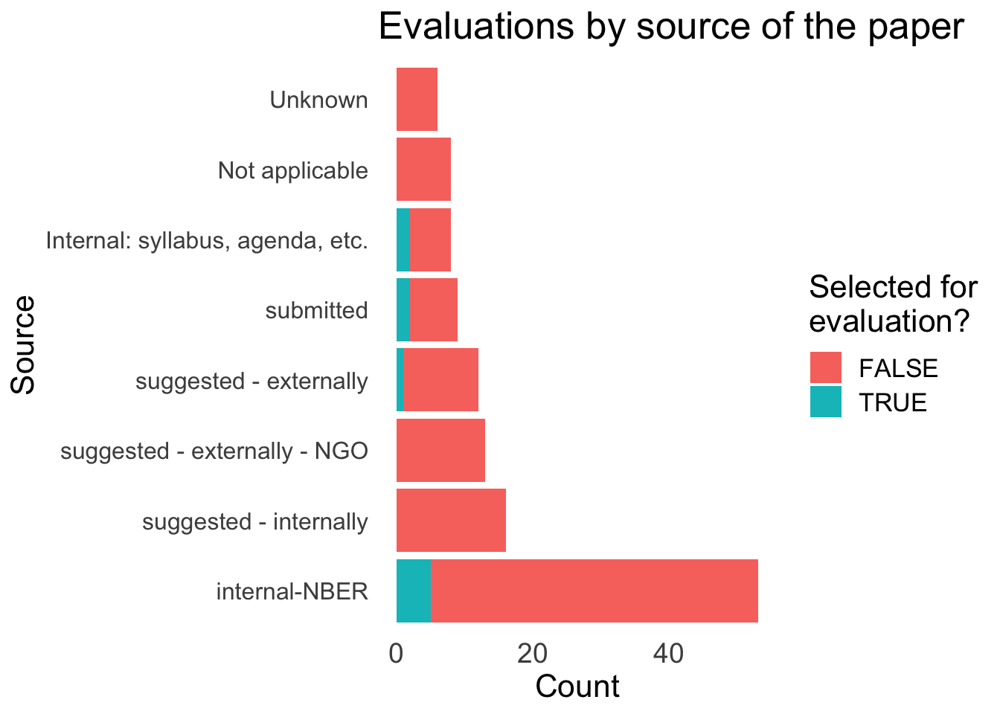

1.1 Data input, cleaning, feature construction and imputation
load packages
library(tidyverse)# data acquisition ----#devtools::install_github("bergant/airtabler")library(airtabler)# library(qualtRics) # Download 'Qualtrics' Survey Data# data cleaning & shaping ----# library(data.table) # Extension of 'data.frame' for speedy things# library(janitor) # Simple Tools for Examining and Cleaning Dirty Data# library(reshape2) # Flexibly Reshape Data: A Reboot of the Reshape Package# library(santoku) # A Versatile Cutting Tool# library(miceadds) # Some Additional Multiple Imputation Functions, Especially for 'mice'# library(labelled) # Manipulating Labelled Data# data analysis ----# library(lme4)# library(lmtest) # Testing Linear Regression Models# library(lavaan) # Latent Variable Analysis# library(jtools) # Analysis and Presentation of Social Scientific Data# library(plm) # Linear Models for Panel Data# library(corrr) # Correlations in R# library(nFactors) # Parallel Analysis and Other Non Graphical Solutions to the Cattell Scree Test# library(GPArotation) # Gradient Projection Factor Rotation# library(quantreg) # Quantile Regression# library(psych) # Procedures for Psychological, Psychometric, and Personality Research# library(skimr) # Compact and Flexible Summaries of Data# library(modeest) # Mode Estimation# library(DescTools) # Tools for Descriptive Statistics# library(effectsize) #Indices of Effect Size# library(mediation) # Causal Mediation Analysis# library(pryr) # Tools for Computing on the Language# library(sjmisc) # Data and Variable Transformation Functions# library(emmeans) # Estimated Marginal Means, aka Least-Squares Means# library(sandwich) # Robust Covariance Matrix Estimators# library(pastecs) # Package for Analysis of Space-Time Ecological Series# library(likert) # Analysis and Visualization Likert Items# markdown et al. ----# library(knitr)# library(bookdown)# library(kableExtra)# library(huxtable) # Easily Create and Style Tables for LaTeX, HTML and Other Formatslibrary(formattable)# Create 'Formattable' Data Structures# library(sparkline) # 'jQuery' Sparkline 'htmlwidget'library(DT)# R interface to DataTables library (JavaScript)# dataviz ----# library(ggeffects) # Create Tidy Data Frames of Marginal Effects for 'ggplot' from Model Outputs# library(scales) # Scale Functions for Visualization# library(RColorBrewer)# library(plotrix) # Various Plotting Functions# library(ggthemes)# library(ggridges)library(ggrepel)# library(paletteer) # Comprehensive Collection of Color Palettes# library(sjPlot) # Data Visualization for Statistics in Social Sciencelibrary(plotly)# Create Interactive Web Graphics via 'plotly.js'# others ----library(here)# A Simpler Way to Find Your Files# library(digest) # Create Compact Hash Digests of R Objects# library(pacman) # Package management tools# library(devtools) # Tools to Make Developing R Packages Easier# #devtools::install_github("rethinkpriorities/rp-r-package")# library(rethinkpriorities)# #devtools::install_github("rethinkpriorities/r-noodling-package") #mainly used playing in real time# library(rnoodling)# Currently unused packages ----# library(BayesianFirstAid)#devtools::install_github("paulhendricks/anonymizer")#library(anonymizer)#devtools::install_github("metamelb-repliCATS/aggreCAT")#library(aggrecat)# Make sure select is always the dplyr versionselect<-dplyr::select# optionsoptions(knitr.duplicate.label ="allow")options(mc.cores =parallel::detectCores())
input from airtable
base_id<-"appbPYEw9nURln7Qg"# Set your Airtable API keySys.setenv(AIRTABLE_API_KEY =Sys.getenv("AIRTABLE_KEY"))#this should be set in my .Renviron file# Read data from a specific viewevals<-air_get(base =base_id, "output_eval")all_pub_records<-data.frame()pub_records<-air_select(base =base_id, table ="crucial_research")# Append the records to the listall_pub_records<-bind_rows(all_pub_records, pub_records)# While the length of the records list is 100 (the maximum), fetch more recordswhile(nrow(pub_records)==100){# Get the ID of the last record in the listoffset<-get_offset(pub_records)# Fetch the next 100 records, starting after the last IDpub_records<-air_select(base =base_id, table ="crucial_research", offset =offset)# Append the records to the dfall_pub_records<-bind_rows(all_pub_records, pub_records)}
just the useful and publish-able data, clean a bit
colnames(evals)<-snakecase::to_snake_case(colnames(evals))evals_pub<-evals%>%dplyr::rename(stage_of_process =stage_of_process_todo_from_crucial_research_2)%>%mutate(stage_of_process =unlist(stage_of_process))%>%dplyr::filter(stage_of_process=="published")%>%select(id, crucial_research, paper_abbrev, evaluator_name, category, source_main, author_agreement, overall, lb_overall, ub_overall, conf_index_overall, advancing_knowledge_and_practice, lb_advancing_knowledge_and_practice, ub_advancing_knowledge_and_practice, conf_index_advancing_knowledge_and_practice, methods_justification_reasonableness_validity_robustness, lb_methods_justification_reasonableness_validity_robustness, ub_methods_justification_reasonableness_validity_robustness, conf_index_methods_justification_reasonableness_validity_robustness, logic_communication, lb_logic_communication, ub_logic_communication, conf_index_logic_communication, engaging_with_real_world_impact_quantification_practice_realism_and_relevance, lb_engaging_with_real_world_impact_quantification_practice_realism_and_relevance, ub_engaging_with_real_world_impact_quantification_practice_realism_and_relevance, conf_index_engaging_with_real_world_impact_quantification_practice_realism_and_relevance, relevance_to_global_priorities, lb_relevance_to_global_priorities, ub_relevance_to_global_priorities, conf_index_relevance_to_global_priorities, journal_quality_predict, lb_journal_quality_predict, ub_journal_quality_predict, conf_index_journal_quality_predict, open_collaborative_replicable, conf_index_open_collaborative_replicable, lb_open_collaborative_replicable, ub_open_collaborative_replicable, merits_journal, lb_merits_journal, ub_merits_journal, conf_index_merits_journal)evals_pub%<>%tidyr::unnest_wider(category, names_sep ="")%>%tidyr::unnest_wider(paper_abbrev, names_sep ="")%>%mutate(across(everything(), unlist))%>%#unlist list columns dplyr::rename(paper_abbrev =paper_abbrev1)#Todo -- check the unlist is not propagating the entry#Note: category, topic_subfield, and source have multiple meaningful categories. These will need care
Shorten names
new_names<-c("eval_name"="evaluator_name","cat_1"="category1","cat_2"="category2","cat_3"="category3","crucial_rsx"="crucial_research","conf_overall"="conf_index_overall","adv_knowledge"="advancing_knowledge_and_practice","lb_adv_knowledge"="lb_advancing_knowledge_and_practice","ub_adv_knowledge"="ub_advancing_knowledge_and_practice","conf_adv_knowledge"="conf_index_advancing_knowledge_and_practice","methods"="methods_justification_reasonableness_validity_robustness","lb_methods"="lb_methods_justification_reasonableness_validity_robustness","ub_methods"="ub_methods_justification_reasonableness_validity_robustness","conf_methods"="conf_index_methods_justification_reasonableness_validity_robustness","logic_comms"="logic_communication","lb_logic_comms"="lb_logic_communication","ub_logic_comms"="ub_logic_communication","conf_logic_comms"="conf_index_logic_communication","real_world"="engaging_with_real_world_impact_quantification_practice_realism_and_relevance","lb_real_world"="lb_engaging_with_real_world_impact_quantification_practice_realism_and_relevance","ub_real_world"="ub_engaging_with_real_world_impact_quantification_practice_realism_and_relevance","conf_real_world"="conf_index_engaging_with_real_world_impact_quantification_practice_realism_and_relevance","gp_relevance"="relevance_to_global_priorities","lb_gp_relevance"="lb_relevance_to_global_priorities","ub_gp_relevance"="ub_relevance_to_global_priorities","conf_gp_relevance"="conf_index_relevance_to_global_priorities","journal_predict"="journal_quality_predict","lb_journal_predict"="lb_journal_quality_predict","ub_journal_predict"="ub_journal_quality_predict","conf_journal_predict"="conf_index_journal_quality_predict","open_sci"="open_collaborative_replicable","conf_open_sci"="conf_index_open_collaborative_replicable","lb_open_sci"="lb_open_collaborative_replicable","ub_open_sci"="ub_open_collaborative_replicable","conf_merits_journal"="conf_index_merits_journal")evals_pub<-evals_pub%>%rename(!!!new_names)# Function to insert a newline character every 15 characterswrap_text<-function(x, width=15){gsub("(.{1,15})", "\\1-\n", x)}evals_pub$source_main_wrapped<-wrap_text(evals_pub$source_main, 15)evals_pub$eval_name<-ifelse(grepl("^\\b\\w+\\b$|\\bAnonymous\\b", evals_pub$eval_name),paste0("Anonymous_", seq_along(evals_pub$eval_name)),evals_pub$eval_name)# make the old names into labels# Create a list of labelslabels<-str_replace_all(new_names, "_", " ")labels<-str_to_title(labels)# Assign labels to the dataframe# for(i in seq_along(labels)) {# col_name <- new_names[names(new_names)[i]]# label <- labels[i]# attr(evals_pub[[col_name]], "label") <- label# }#
Reconcile uncertainty ratings and CIs
Where people gave only confidence level ‘dots’, we impute CIs (confidence/credible intervals). We follow the correspondence described here. (Otherwise, where they gave actual CIs, we use these.)1
For 0-100 ratings, code the LB as \(min(R - 4\times \frac{R}{100},0)\) and the UB as \(max(R + 4\times \frac{R}{100},0)\), where R is the stated (middle) rating. This ‘scales’ the CI, as interpreted, to be proportional to the rating, with a maximum ‘interval’ of about 8, with the rating is about 96.
4 = Very*confident: 90% confidence interval +/- 8 points or less
For 0-100 ratings, code the LB as \(min(R - 8\times \frac{R}{100},0)\) and the UB as \(max(R + 8\times \frac{R}{100},0)\), where R is the stated (middle) rating.
3 = Somewhat** confident: 90% confidence interval +/- 15 points or less
2 = Not very** confident: 90% confidence interval, +/- 25 points or less
Comparable scaling for the 2-3 ratings as for the 4 and 5 rating.
1 = Not** confident: (90% confidence interval +/- more than 25 points)
Code LB as \(min(R - 37.5\times \frac{R}{100},0)\) and the UB as \(max(R + 37.5\times \frac{R}{100},0)\).
This is just a first-pass. There might be a more information-theoretic way of doing this. On the other hand, we might be switching the evaluations to use a different tool soon, perhaps getting rid of the 1-5 confidence ratings altogether.
reconcile explicit bounds and stated confidence level
# Define the baseline widths for each confidence ratingbaseline_widths<-c(4, 8, 15, 25, 37.5)# Define a function to calculate the lower and upper bounds, where given only an indexcalc_bounds<-function(rating, confidence, lb_explicit, ub_explicit, scale=100){# Check if confidence is NAif(is.na(confidence)){return(c(lb_explicit, ub_explicit))# Return explicit bounds if confidence is NA}else{baseline_width<-baseline_widths[confidence]lb<-pmax(rating-baseline_width*rating/scale, 0)ub<-pmin(rating+baseline_width*rating/scale, scale)return(c(lb, ub))}}# Function to calculate bounds for a single categorycalc_category_bounds<-function(df, category, scale=100){# Calculate boundsbounds<-mapply(calc_bounds, df[[category]], df[[paste0("conf_", category)]], df[[paste0("lb_", category)]], df[[paste0("ub_", category)]])# Convert to data frame and ensure it has the same number of rows as the inputbounds_df<-as.data.frame(t(bounds))rownames(bounds_df)<-NULL# Add bounds to original data framedf[[paste0(category, "_lb_imp")]]<-bounds_df[, 1]df[[paste0(category, "_ub_imp")]]<-bounds_df[, 2]return(df)}# Lists of categoriesrating_cats<-c("overall", "adv_knowledge", "methods", "logic_comms", "real_world", "gp_relevance", "open_sci")#... 'predictions' are currently 1-5 (0-5?)pred_cats<-c("journal_predict", "merits_journal")# Apply the function to each category# DR: I don't love this looping 'edit in place' code approach, but whateverfor(catinrating_cats){evals_pub<-calc_category_bounds(evals_pub, cat, scale=100)}for(catinpred_cats){evals_pub<-calc_category_bounds(evals_pub, cat, scale=5)}
The funnel plot below starts with the papers we prioritized for likely Unjournal evaluation:^(Those marked as ‘considering’ in the Airtable).
Code
#Add in the 3 different evaluation input sources#update to be automated rather than hard-coded - to look at David's work herepapers_considered<-all_pub_records%>%nrow()papers_deprio<-all_pub_records%>%filter(`stage of process/todo`=="de-prioritized")%>%nrow()papers_evaluated<-all_pub_records%>%filter(`stage of process/todo`%in%c("published","contacting/awaiting_authors_response_to_evaluation","awaiting_publication_ME_comments","awaiting_evaluations"))%>%nrow()papers_complete<-all_pub_records%>%filter(`stage of process/todo`=="published")%>%nrow()papers_in_progress<-papers_evaluated-papers_completepapers_still_in_consideration<-all_pub_records%>%filter(`stage of process/todo`=="considering")%>%nrow()#todo: adjust wording of hover notes ('source, target...etc')fig<-plot_ly( type ="sankey", orientation ="h", node =list( label =c("Prioritized", "Evaluating", "Complete", "In progress", "Still in consideration", "De-prioritized"), color =c("orange", "green", "green", "orange", "orange", "red"),#Todo: adjust 'location' to group these left to right pad =15, thickness =20, line =list( color ="black", width =0.5)), link =list( source =c(0,1,1,0,0), target =c(1,2,3,4,5), value =c(papers_evaluated,papers_complete,papers_in_progress,papers_still_in_consideration,papers_deprio)))fig<-fig%>%layout( title ="Unjournal paper funnel", font =list( size =10))fig
summary_df<-evals_pub%>%distinct(crucial_rsx, .keep_all =T)%>%group_by(cat_1)%>%summarise(count =n())summary_df$cat_1[is.na(summary_df$cat_1)]<-"Unknown"summary_df<-summary_df%>%arrange(-desc(count))%>%mutate(cat_1 =factor(cat_1, levels =unique(cat_1)))# Create stacked bar chartggplot(summary_df, aes(x =cat_1, y =count))+geom_bar(stat ="identity")+theme_minimal()+labs(x ="Paper category", y ="Count", title ="Count of evaluated papers by primary category")
all_pub_records$is_evaluated=all_pub_records$`stage of process/todo`%in%c("published","contacting/awaiting_authors_response_to_evaluation","awaiting_publication_ME_comments","awaiting_evaluations")all_pub_records$source_main[all_pub_records$source_main=="NA"]<-"Not applicable"all_pub_records$source_main[all_pub_records$source_main=="internal-from-syllabus-agenda-policy-database"]<-"Internal: syllabus, agenda, etc."all_pub_records$source_main=tidyr::replace_na(all_pub_records$source_main, "Unknown")ggplot(all_pub_records, aes(x =fct_infreq(source_main), fill =is_evaluated))+geom_bar(position ="stack", stat ="count")+labs(x ="Source", y ="Count", fill ="Selected for\nevaluation?")+coord_flip()+# flipping the coordinates to have categories on y-axis (on the left)theme_light()+theme_minimal()+ggtitle("Evaluations by source of the paper")+# add titletheme( panel.grid.major =element_blank(), panel.grid.minor =element_blank(), text =element_text(size =16), # changing all text size to 16 axis.text.y =element_text(size =12), axis.text.x =element_text(size =14))

The distribution of ratings and predictions
Next, we present the ratings and predictions along with ‘uncertainty measures’.4 Where evaluators gave only a 1-5 confidence level5, we use the imputations discussed and coded above.
For each category and prediction (overall and by paper)
Code
wrap_text<-function(text, width){sapply(strwrap(text, width =width, simplify =FALSE), paste, collapse ="\n")}evals_pub$wrapped_pub_names<-wrap_text(evals_pub$paper_abbrev, width =15)#todo -- sort by average overall, use color and vertical spacing more#todo: introduce a carriage return into the paper names (workaround) to wrap these and save horizontal space# Dot plotggplot(evals_pub, aes(x =paper_abbrev, y =overall))+geom_point(stat ="identity", size =3, shape =1, colour ="lightblue", stroke =2)+geom_text_repel(aes(label =eval_name), size =3, box.padding =unit(0.35, "lines"), point.padding =unit(0.3, "lines"))+coord_flip()+# flipping the coordinates to have categories on y-axis (on the left)theme_light()+xlab("Paper")+# remove x-axis labelylab("Overall score")+# name y-axisggtitle("Overall scores of evaluated papers")+# add titletheme( panel.grid.major =element_blank(), panel.grid.minor =element_blank(), text =element_text(size =14), # changing all text size to 16 axis.text.y =element_text(size =8), axis.text.x =element_text(size =12))
Code
#todo -- add more vertical space between papers
In future (todo), we aim to build a dashboard allowing people to use the complete set of ratings and predictions, and choose their own weightings. (Also incorporating the evaluator uncertainty in reasonable ways.)
The below should be fixed – the column widths below are misleading
Future vis
Spider or radial chart
Each rating is a dimension or attribute (potentially normalized) potentially superimpose a ‘circle’ for the suggested weighting or overall.
Each paper gets its own spider, with all others (or the average) in faded color behind it as a comparator.
Ideally user can switch on/off
Beware – people infer things from the shape’s size
… perhaps building a model of this. We are looking for systematic ‘biases and trends’, loosely speaking, to help us better understand how our evaluation system is working.
Relationship among the ratings (and predictions)
Correlation matrix
ANOVA
PCA (Principle components)
With other ‘control’ factors?
How do the specific measures predict the aggregate ones (overall rating, merited publication)
CF ‘our suggested weighting’
1.3 Aggregation of expert opinion (modeling)
1.4 Notes on sources and approaches
Hanea et al
(Consult, e.g., repliCATS/Hanea and others work; meta-science and meta-analysis approaches)
aggrecat package
Although the accuracy, calibration, and informativeness of the majority of methods are very similar, a couple of the aggregation methods consistently distinguish themselves as among the best or worst. Moreover, the majority of methods outperform the usual benchmarks provided by the simple average or the median of estimates.
However, these are in a different context. Most of those measures are designed to deal with probablistic forecasts for binary outcomes, where the predictor also gives a ‘lower bound’ and ‘upper bound’ for that probability. We could roughly compare that to our continuous metrics with 90% CI’s (or imputations for these).
Furthermore, many (all their successful measures?) use ‘performance-based weights’, accessing metrics from prior prediction performance of the same forecasters We do not have these, nor do we have a sensible proxy for this.
… we show how experts can be ranked based on their knowledge and their level of (un)certainty. By letting experts specify their knowledge in the form of a probability distribution, we can assess how accurately they can predict new data, and how appropriate their level of (un)certainty is. The expert’s specified probability distribution can be seen as a prior in a Bayesian statistical setting. We evaluate these priors by extending an existing prior-data (dis)agreement measure, the Data Agreement Criterion, and compare this approach to using Bayes factors to assess prior specification. We compare experts with each other and the data to evaluate their appropriateness. Using this method, new research questions can be asked and answered, for instance: Which expert predicts the new data best? Is there agreement between my experts and the data? Which experts’ representation is more valid or useful? Can we reach convergence between expert judgement and data? We provided an empirical example ranking (regional) directors of a large financial institution based on their predictions of turnover.
See Gsheet HERE, generated from an Elicit.org inquiry.
In spite of the caveats in the fold above, we construct some measures of aggregate beliefs using the aggrecat package. We will make (and explain) some ad-hoc choices here. We present these:
For each paper
For categories of papers and cross-paper categories of evaluations
For the overall set of papers and evaluations
We can also hold onto these aggregated metrics for later use in modeling.
Simple averaging
Bayesian approaches
Best-performing approaches from elsewhere
Assumptions over unit-level random terms
Explicit modeling of ‘research quality’ (for use in prizes, etc.)
Use the above aggregation as the outcome of interest, or weight towards categories of greater interest?
Model with controls – look for greatest positive residual?
1.5 Inter-rater reliability
1.6 Decomposing variation, dimension reduction, simple linear models
1.7 Later possiblities
Relation to evaluation text content (NLP?)
Relation/prediction of later outcomes (traditional publication, citations, replication)
1.8 Scoping our future coverage
We have funding to evaluate roughly 50-70 papers/projects per year, given our proposed incentives.
Consider:
How many relevant NBER papers come out per year?
How much relevant work in other prestige archives?
What quotas do we want (by cause, etc.) and how feasible are these?
Note this is only a first-pass; a more sophisticated approach may be warranted in future.↩︎
Consider: timing might be its own section or chapter; this is a major thing journals track, and we want to keep track of ourselves↩︎
Make interactive/dashboards of the elements below↩︎
We use “ub imp” (and “lb imp”) to denote the upper and lower bounds given by evaluators.↩︎
More or less, the ones who report a level for ‘conf overall’, although some people did this for some but not others↩︎
Source Code
# Evaluation data: description, exploration, checks## Data input, cleaning, feature construction and imputation ```{r setup, warning=FALSE}#| label: load-packages#| code-summary: "load packages"library(tidyverse) # data acquisition ----#devtools::install_github("bergant/airtabler")library(airtabler)# library(qualtRics) # Download 'Qualtrics' Survey Data# data cleaning & shaping ----# library(data.table) # Extension of 'data.frame' for speedy things# library(janitor) # Simple Tools for Examining and Cleaning Dirty Data# library(reshape2) # Flexibly Reshape Data: A Reboot of the Reshape Package# library(santoku) # A Versatile Cutting Tool# library(miceadds) # Some Additional Multiple Imputation Functions, Especially for 'mice'# library(labelled) # Manipulating Labelled Data# data analysis ----# library(lme4)# library(lmtest) # Testing Linear Regression Models# library(lavaan) # Latent Variable Analysis# library(jtools) # Analysis and Presentation of Social Scientific Data# library(plm) # Linear Models for Panel Data# library(corrr) # Correlations in R# library(nFactors) # Parallel Analysis and Other Non Graphical Solutions to the Cattell Scree Test# library(GPArotation) # Gradient Projection Factor Rotation# library(quantreg) # Quantile Regression# library(psych) # Procedures for Psychological, Psychometric, and Personality Research# library(skimr) # Compact and Flexible Summaries of Data# library(modeest) # Mode Estimation# library(DescTools) # Tools for Descriptive Statistics# library(effectsize) #Indices of Effect Size# library(mediation) # Causal Mediation Analysis# library(pryr) # Tools for Computing on the Language# library(sjmisc) # Data and Variable Transformation Functions# library(emmeans) # Estimated Marginal Means, aka Least-Squares Means# library(sandwich) # Robust Covariance Matrix Estimators# library(pastecs) # Package for Analysis of Space-Time Ecological Series# library(likert) # Analysis and Visualization Likert Items# markdown et al. ----# library(knitr)# library(bookdown)# library(kableExtra)# library(huxtable) # Easily Create and Style Tables for LaTeX, HTML and Other Formatslibrary(formattable) # Create 'Formattable' Data Structures# library(sparkline) # 'jQuery' Sparkline 'htmlwidget'library(DT) # R interface to DataTables library (JavaScript)# dataviz ----# library(ggeffects) # Create Tidy Data Frames of Marginal Effects for 'ggplot' from Model Outputs# library(scales) # Scale Functions for Visualization# library(RColorBrewer)# library(plotrix) # Various Plotting Functions# library(ggthemes)# library(ggridges)library(ggrepel)# library(paletteer) # Comprehensive Collection of Color Palettes# library(sjPlot) # Data Visualization for Statistics in Social Sciencelibrary(plotly) # Create Interactive Web Graphics via 'plotly.js'# others ----library(here) # A Simpler Way to Find Your Files# library(digest) # Create Compact Hash Digests of R Objects# library(pacman) # Package management tools# library(devtools) # Tools to Make Developing R Packages Easier# #devtools::install_github("rethinkpriorities/rp-r-package")# library(rethinkpriorities)# #devtools::install_github("rethinkpriorities/r-noodling-package") #mainly used playing in real time# library(rnoodling)# Currently unused packages ----# library(BayesianFirstAid)#devtools::install_github("paulhendricks/anonymizer")#library(anonymizer)#devtools::install_github("metamelb-repliCATS/aggreCAT")#library(aggrecat)# Make sure select is always the dplyr versionselect <- dplyr::select # optionsoptions(knitr.duplicate.label ="allow")options(mc.cores = parallel::detectCores())``````{r}#| label: input_at#| code-summary: "input from airtable"base_id <-"appbPYEw9nURln7Qg"# Set your Airtable API keySys.setenv(AIRTABLE_API_KEY =Sys.getenv("AIRTABLE_KEY"))#this should be set in my .Renviron file# Read data from a specific viewevals <-air_get(base = base_id, "output_eval") all_pub_records <-data.frame()pub_records <-air_select(base = base_id, table ="crucial_research")# Append the records to the listall_pub_records <-bind_rows(all_pub_records, pub_records)# While the length of the records list is 100 (the maximum), fetch more recordswhile(nrow(pub_records) ==100) {# Get the ID of the last record in the list offset <-get_offset(pub_records)# Fetch the next 100 records, starting after the last ID pub_records <-air_select(base = base_id, table ="crucial_research", offset = offset)# Append the records to the df all_pub_records <-bind_rows(all_pub_records, pub_records)}``````{r}#| label: extract#| code-summary: "just the useful and publish-able data, clean a bit"colnames(evals) <- snakecase::to_snake_case(colnames(evals))evals_pub <- evals %>% dplyr::rename(stage_of_process = stage_of_process_todo_from_crucial_research_2) %>%mutate(stage_of_process =unlist(stage_of_process)) %>% dplyr::filter(stage_of_process =="published") %>%select(id, crucial_research, paper_abbrev, evaluator_name, category, source_main, author_agreement, overall, lb_overall, ub_overall, conf_index_overall, advancing_knowledge_and_practice, lb_advancing_knowledge_and_practice, ub_advancing_knowledge_and_practice, conf_index_advancing_knowledge_and_practice, methods_justification_reasonableness_validity_robustness, lb_methods_justification_reasonableness_validity_robustness, ub_methods_justification_reasonableness_validity_robustness, conf_index_methods_justification_reasonableness_validity_robustness, logic_communication, lb_logic_communication, ub_logic_communication, conf_index_logic_communication, engaging_with_real_world_impact_quantification_practice_realism_and_relevance, lb_engaging_with_real_world_impact_quantification_practice_realism_and_relevance, ub_engaging_with_real_world_impact_quantification_practice_realism_and_relevance, conf_index_engaging_with_real_world_impact_quantification_practice_realism_and_relevance, relevance_to_global_priorities, lb_relevance_to_global_priorities, ub_relevance_to_global_priorities, conf_index_relevance_to_global_priorities, journal_quality_predict, lb_journal_quality_predict, ub_journal_quality_predict, conf_index_journal_quality_predict, open_collaborative_replicable, conf_index_open_collaborative_replicable, lb_open_collaborative_replicable, ub_open_collaborative_replicable, merits_journal, lb_merits_journal, ub_merits_journal, conf_index_merits_journal)evals_pub %<>% tidyr::unnest_wider(category, names_sep ="") %>% tidyr::unnest_wider(paper_abbrev, names_sep ="") %>%mutate(across(everything(), unlist)) %>%#unlist list columns dplyr::rename(paper_abbrev = paper_abbrev1)#Todo -- check the unlist is not propagating the entry#Note: category, topic_subfield, and source have multiple meaningful categories. These will need care ``````{r}#| label: shorten_names#| code-summary: "Shorten names "new_names <-c("eval_name"="evaluator_name","cat_1"="category1","cat_2"="category2","cat_3"="category3","crucial_rsx"="crucial_research","conf_overall"="conf_index_overall","adv_knowledge"="advancing_knowledge_and_practice","lb_adv_knowledge"="lb_advancing_knowledge_and_practice","ub_adv_knowledge"="ub_advancing_knowledge_and_practice","conf_adv_knowledge"="conf_index_advancing_knowledge_and_practice","methods"="methods_justification_reasonableness_validity_robustness","lb_methods"="lb_methods_justification_reasonableness_validity_robustness","ub_methods"="ub_methods_justification_reasonableness_validity_robustness","conf_methods"="conf_index_methods_justification_reasonableness_validity_robustness","logic_comms"="logic_communication","lb_logic_comms"="lb_logic_communication","ub_logic_comms"="ub_logic_communication","conf_logic_comms"="conf_index_logic_communication","real_world"="engaging_with_real_world_impact_quantification_practice_realism_and_relevance","lb_real_world"="lb_engaging_with_real_world_impact_quantification_practice_realism_and_relevance","ub_real_world"="ub_engaging_with_real_world_impact_quantification_practice_realism_and_relevance","conf_real_world"="conf_index_engaging_with_real_world_impact_quantification_practice_realism_and_relevance","gp_relevance"="relevance_to_global_priorities","lb_gp_relevance"="lb_relevance_to_global_priorities","ub_gp_relevance"="ub_relevance_to_global_priorities","conf_gp_relevance"="conf_index_relevance_to_global_priorities","journal_predict"="journal_quality_predict","lb_journal_predict"="lb_journal_quality_predict","ub_journal_predict"="ub_journal_quality_predict","conf_journal_predict"="conf_index_journal_quality_predict","open_sci"="open_collaborative_replicable","conf_open_sci"="conf_index_open_collaborative_replicable","lb_open_sci"="lb_open_collaborative_replicable","ub_open_sci"="ub_open_collaborative_replicable","conf_merits_journal"="conf_index_merits_journal")evals_pub <- evals_pub %>%rename(!!!new_names)# Function to insert a newline character every 15 characterswrap_text <-function(x, width =15) {gsub("(.{1,15})", "\\1-\n", x)}evals_pub$source_main_wrapped <-wrap_text(evals_pub$source_main, 15)evals_pub$eval_name <-ifelse(grepl("^\\b\\w+\\b$|\\bAnonymous\\b", evals_pub$eval_name),paste0("Anonymous_", seq_along(evals_pub$eval_name)), evals_pub$eval_name)# make the old names into labels# Create a list of labelslabels <-str_replace_all(new_names, "_", " ")labels <-str_to_title(labels)# Assign labels to the dataframe# for(i in seq_along(labels)) {# col_name <- new_names[names(new_names)[i]]# label <- labels[i]# attr(evals_pub[[col_name]], "label") <- label# }# ```<!-- need airtable API stuff -->### Reconcile uncertainty ratings and CIs {-}Where people gave only confidence level 'dots', we impute CIs (confidence/credible intervals). We follow the correspondence described [here](https://effective-giving-marketing.gitbook.io/unjournal-x-ea-and-global-priorities-research/policies-projects-evaluation-workflow/evaluation/guidelines-for-evaluators#1-5-dots-explanation-and-relation-to-cis). (Otherwise, where they gave actual CIs, we use these.)^[Note this is only a first-pass; a more sophisticated approach may be warranted in future.]::: {.callout-note collapse="true"}## Dots to interval choices> 5 = Extremely confident, i.e., 90% confidence interval spans +/- 4 points or less)For 0-100 ratings, code the LB as $min(R - 4\times \frac{R}{100},0)$ and the UB as $max(R + 4\times \frac{R}{100},0)$, where R is the stated (middle) rating. This 'scales' the CI, as interpreted, to be proportional to the rating, with a maximum 'interval' of about 8, with the rating is about 96.> 4 = Very*confident: 90% confidence interval +/- 8 points or lessFor 0-100 ratings, code the LB as $min(R - 8\times \frac{R}{100},0)$ and the UB as $max(R + 8\times \frac{R}{100},0)$, where R is the stated (middle) rating. > 3 = Somewhat** confident: 90% confidence interval +/- 15 points or less > 2 = Not very** confident: 90% confidence interval, +/- 25 points or lessComparable scaling for the 2-3 ratings as for the 4 and 5 rating.> 1 = Not** confident: (90% confidence interval +/- more than 25 points)Code LB as $min(R - 37.5\times \frac{R}{100},0)$ and the UB as $max(R + 37.5\times \frac{R}{100},0)$. This is just a first-pass. There might be a more information-theoretic way of doing this. On the other hand, we might be switching the evaluations to use a different tool soon, perhaps getting rid of the 1-5 confidence ratings altogether.::: ```{r}#| label: reconcile_bounds#| code-summary: "reconcile explicit bounds and stated confidence level"# Define the baseline widths for each confidence ratingbaseline_widths <-c(4, 8, 15, 25, 37.5)# Define a function to calculate the lower and upper bounds, where given only an indexcalc_bounds <-function(rating, confidence, lb_explicit, ub_explicit, scale=100) {# Check if confidence is NAif (is.na(confidence)) {return(c(lb_explicit, ub_explicit)) # Return explicit bounds if confidence is NA } else { baseline_width <- baseline_widths[confidence] lb <-pmax(rating - baseline_width * rating / scale, 0) ub <-pmin(rating + baseline_width * rating / scale, scale)return(c(lb, ub)) }}# Function to calculate bounds for a single categorycalc_category_bounds <-function(df, category, scale=100) {# Calculate bounds bounds <-mapply(calc_bounds, df[[category]], df[[paste0("conf_", category)]], df[[paste0("lb_", category)]], df[[paste0("ub_", category)]])# Convert to data frame and ensure it has the same number of rows as the input bounds_df <-as.data.frame(t(bounds))rownames(bounds_df) <-NULL# Add bounds to original data frame df[[paste0(category, "_lb_imp")]] <- bounds_df[, 1] df[[paste0(category, "_ub_imp")]] <- bounds_df[, 2]return(df)}# Lists of categoriesrating_cats <-c("overall", "adv_knowledge", "methods", "logic_comms", "real_world", "gp_relevance", "open_sci")#... 'predictions' are currently 1-5 (0-5?)pred_cats <-c("journal_predict", "merits_journal")# Apply the function to each category# DR: I don't love this looping 'edit in place' code approach, but whateverfor (cat in rating_cats) { evals_pub <-calc_category_bounds(evals_pub, cat, scale=100)}for (cat in pred_cats) { evals_pub <-calc_category_bounds(evals_pub, cat, scale=5)}``````{r}#| label: savedata#| code-summary: "save data for others' use"evals_pub %>%saveRDS(file =here("data", "evals.Rdata"))evals_pub %>%write_csv(file =here("data", "evals.csv"))#evals_pub %>% readRDS(file = here("data", "evals.Rdata"))```## Basic presentation### What sorts of papers/projects are we considering and evaluating? In this section, we give some simple data summaries and visualizations, for a broad description of The Unjournal's coverage. In the interactive table below we give some key attributes of the papers and the evaluators.::: column-body-outset<!-- Todo: make this smaller, get it to fit on the page better, more user-friendly -->```{r }#| label: datatable0( all_evals_dt <- evals_pub %>%arrange(paper_abbrev, eval_name) %>% dplyr::select(paper_abbrev, crucial_rsx, eval_name, cat_1, cat_2, source_main_wrapped, author_agreement) %>% dplyr::select(-matches("ub_|lb_|conf")) %>%#rename_all(~ gsub("_", " ", .)) %>% rename("Research _____________________"="crucial_rsx" ) %>% DT::datatable(caption ="Evaluations (confidence bounds not shown)", filter ='top',rownames=FALSE,options =list(pageLength =7) ))```\Next, a preview of the evaluations, focusing on the 'middle ratings and predictions':```{r }#| label: datatable#| code-summary: "Data datable (all shareable relevant data)"( all_evals_dt <- evals_pub %>%arrange(paper_abbrev, eval_name, overall) %>% dplyr::select(paper_abbrev, eval_name, all_of(rating_cats)) %>% DT::datatable(caption ="Evaluations and predictions (confidence bounds not shown)", filter ='top',rownames=FALSE,options =list(pageLength =7) ))```\<!-- Todo -- Present these, including bounds, in a useful way -->```{r eval=FALSE}( all_evals_dt_ci <- evals_pub %>%arrange(paper_abbrev, eval_name) %>% dplyr::select(paper_abbrev, eval_name, conf_overall, rating_cats, matches("ub_imp|lb_imp")) %>% DT::datatable(caption ="Evaluations and (imputed*) confidence bounds)", filter ='top',rownames=FALSE,options =list(pageLength =7) ))```:::::: {.callout-note collapse="true"}## Next consider...- Composition of research evaluated - By field (economics, psychology, etc.) - By subfield of economics - By topic/cause area (Global health, economic development, impact of technology, global catastrophic risks, etc. ) - By source (submitted, identified with author permission, direct evaluation)- Timing of intake and evaluation^[Consider: timing might be its own section or chapter; this is a major thing journals track, and we want to keep track of ourselves]:::The funnel plot below starts with the papers we prioritized for likely *Unjournal* evaluation:^(Those marked as 'considering' in the Airtable).```{r}#Add in the 3 different evaluation input sources#update to be automated rather than hard-coded - to look at David's work herepapers_considered <- all_pub_records %>%nrow()papers_deprio <- all_pub_records %>%filter(`stage of process/todo`=="de-prioritized") %>%nrow()papers_evaluated <- all_pub_records %>%filter(`stage of process/todo`%in%c("published","contacting/awaiting_authors_response_to_evaluation","awaiting_publication_ME_comments","awaiting_evaluations")) %>%nrow()papers_complete <- all_pub_records %>%filter(`stage of process/todo`=="published") %>%nrow()papers_in_progress <- papers_evaluated - papers_completepapers_still_in_consideration <- all_pub_records %>%filter(`stage of process/todo`=="considering") %>%nrow()#todo: adjust wording of hover notes ('source, target...etc')fig <-plot_ly(type ="sankey",orientation ="h",node =list(label =c("Prioritized", "Evaluating", "Complete", "In progress", "Still in consideration", "De-prioritized"),color =c("orange", "green", "green", "orange", "orange", "red"),#Todo: adjust 'location' to group these left to rightpad =15,thickness =20,line =list(color ="black",width =0.5 ) ),link =list(source =c(0,1,1,0,0),target =c(1,2,3,4,5),value =c( papers_evaluated, papers_complete, papers_in_progress, papers_still_in_consideration, papers_deprio )) )fig <- fig %>%layout(title ="Unjournal paper funnel",font =list(size =10 ))fig ```Todo: ^[Make interactive/dashboards of the elements below]```{r}summary_df <- evals_pub %>%distinct(crucial_rsx, .keep_all = T) %>%group_by(cat_1) %>%summarise(count =n()) summary_df$cat_1[is.na(summary_df$cat_1)] <-"Unknown"summary_df <- summary_df %>%arrange(-desc(count)) %>%mutate(cat_1 =factor(cat_1, levels =unique(cat_1)))# Create stacked bar chartggplot(summary_df, aes(x = cat_1, y = count)) +geom_bar(stat ="identity") +theme_minimal() +labs(x ="Paper category", y ="Count", title ="Count of evaluated papers by primary category") ``````{r}# Bar plotggplot(evals_pub, aes(x = source_main_wrapped)) +geom_bar(position ="stack", stat ="count") +labs(x ="Source", y ="Count") +theme_light() +theme_minimal() +ggtitle("Pool of research/evaluations by paper source") +# add titletheme(panel.grid.major =element_blank(),panel.grid.minor =element_blank(),text =element_text(size =16), # changing all text size to 16axis.text.y =element_text(size =10),axis.text.x =element_text(size =14) )``````{r}all_pub_records$is_evaluated = all_pub_records$`stage of process/todo`%in%c("published","contacting/awaiting_authors_response_to_evaluation","awaiting_publication_ME_comments","awaiting_evaluations")all_pub_records$source_main[all_pub_records$source_main =="NA"] <-"Not applicable"all_pub_records$source_main[all_pub_records$source_main =="internal-from-syllabus-agenda-policy-database"] <-"Internal: syllabus, agenda, etc."all_pub_records$source_main = tidyr::replace_na(all_pub_records$source_main, "Unknown")ggplot(all_pub_records, aes(x =fct_infreq(source_main), fill = is_evaluated)) +geom_bar(position ="stack", stat ="count") +labs(x ="Source", y ="Count", fill ="Selected for\nevaluation?") +coord_flip() +# flipping the coordinates to have categories on y-axis (on the left)theme_light() +theme_minimal() +ggtitle("Evaluations by source of the paper") +# add titletheme(panel.grid.major =element_blank(),panel.grid.minor =element_blank(),text =element_text(size =16), # changing all text size to 16axis.text.y =element_text(size =12),axis.text.x =element_text(size =14) )```### The distribution of ratings and predictions {-}Next, we present the ratings and predictions along with 'uncertainty measures'.^[We use "ub imp" (and "lb imp") to denote the upper and lower bounds given by evaluators.] Where evaluators gave only a 1-5 confidence level^[More or less, the ones who report a level for 'conf overall', although some people did this for some but not others], we use the imputations discussed and coded above. - For each category and prediction (overall and by paper)::: column-body-outset```{r}wrap_text <-function(text, width) {sapply(strwrap(text, width = width, simplify =FALSE), paste, collapse ="\n")}evals_pub$wrapped_pub_names <-wrap_text(evals_pub$paper_abbrev, width =15)#todo -- sort by average overall, use color and vertical spacing more#todo: introduce a carriage return into the paper names (workaround) to wrap these and save horizontal space# Dot plotggplot(evals_pub, aes(x = paper_abbrev, y = overall)) +geom_point(stat ="identity", size =3, shape =1, colour ="lightblue", stroke =2) +geom_text_repel(aes(label = eval_name), size =3, box.padding =unit(0.35, "lines"),point.padding =unit(0.3, "lines")) +coord_flip() +# flipping the coordinates to have categories on y-axis (on the left)theme_light() +xlab("Paper") +# remove x-axis labelylab("Overall score") +# name y-axisggtitle("Overall scores of evaluated papers") +# add titletheme(panel.grid.major =element_blank(),panel.grid.minor =element_blank(),text =element_text(size =14), # changing all text size to 16axis.text.y =element_text(size =8),axis.text.x =element_text(size =12) )#todo -- add more vertical space between papers```:::In future (todo), we aim to build a dashboard allowing people to use the complete set of ratings and predictions, and choose their own weightings. (Also incorporating the evaluator uncertainty in reasonable ways.)*The below should be fixed -- the column widths below are misleading*::: {.callout-note collapse="true"}## Future visSpider or radial chart Each rating is a dimension or attribute (potentially normalized)potentially superimpose a 'circle' for the suggested weighting or overall. Each paper gets its own spider, with all others (or the average) in faded color behind it as a comparator. Ideally user can switch on/off Beware -- people infer things from the shape's size::: ::: column-body-outset```{r}unit.scale =function(x) (x*100-min(x*100)) / (max(x*100) -min(x*100))evaluations_table <- evals_pub %>%select(paper_abbrev, eval_name, cat_1, source_main, overall, adv_knowledge, methods, logic_comms, journal_predict) %>%arrange(desc(paper_abbrev))out =formattable( evaluations_table,list(#area(col = 5:8) ~ function(x) percent(x / 100, digits = 0),area(col =5:8) ~color_tile("#FA614B66","#3E7DCC"),`journal_predict`=proportion_bar("#DeF7E9", unit.scale) ))out```:::Next, look for systematic variation - By field and topic area of paper- By submission/selection route- By evaluation manager... perhaps building a model of this. We are looking for systematic 'biases and trends', loosely speaking, to help us better understand how our evaluation system is working.\### Relationship among the ratings (and predictions) {-} - Correlation matrix- ANOVA- PCA (Principle components)- With other 'control' factors?- How do the specific measures predict the aggregate ones (overall rating, merited publication) - CF 'our suggested weighting'## Aggregation of expert opinion (modeling)## Notes on sources and approaches::: {.callout-note collapse="true"}## Hanea et al {-}(Consult, e.g., repliCATS/Hanea and others work; meta-science and meta-analysis approaches)`aggrecat` package> Although the accuracy, calibration, and informativeness of the majority of methods are very similar, a couple of the aggregation methods consistently distinguish themselves as among the best or worst. Moreover, the majority of methods outperform the usual benchmarks provided by the simple average or the median of estimates.[Hanea et al, 2021](https://journals.plos.org/plosone/article?id=10.1371/journal.pone.0256919#sec007) However, these are in a different context. Most of those measures are designed to deal with probablistic forecasts for binary outcomes, where the predictor also gives a 'lower bound' and 'upper bound' for that probability. We could roughly compare that to our continuous metrics with 90% CI's (or imputations for these).Furthermore, many (all their successful measures?) use 'performance-based weights', accessing metrics from prior prediction performance of the same forecasters We do not have these, nor do we have a sensible proxy for this. :::::: {.callout-note collapse="true"}## D Veen et al (2017)[link](https://www.researchgate.net/profile/Duco-Veen/publication/319662351_Using_the_Data_Agreement_Criterion_to_Rank_Experts'_Beliefs/links/5b73e2dc299bf14c6da6c663/Using-the-Data-Agreement-Criterion-to-Rank-Experts-Beliefs.pdf)... we show how experts can be ranked based on their knowledge and their level of (un)certainty. By letting experts specify their knowledge in the form of a probability distribution, we can assess how accurately they can predict new data, and how appropriate their level of (un)certainty is. The expert’s specified probability distribution can be seen as a prior in a Bayesian statistical setting. We evaluate these priors by extending an existing prior-data (dis)agreement measure, the Data Agreement Criterion, and compare this approach to using Bayes factors to assess prior specification. We compare experts with each other and the data to evaluate their appropriateness. Using this method, new research questions can be asked and answered, for instance: Which expert predicts the new data best? Is there agreement between my experts and the data? Which experts’ representation is more valid or useful? Can we reach convergence between expert judgement and data? We provided an empirical example ranking (regional) directors of a large financial institution based on their predictions of turnover. Be sure to consult the [correction made here](https://www.semanticscholar.org/paper/Correction%3A-Veen%2C-D.%3B-Stoel%2C-D.%3B-Schalken%2C-N.%3B-K.%3B-Veen-Stoel/a2882e0e8606ef876133f25a901771259e7033b1)::: ::: {.callout-note collapse="true"}## Also seems relevant:See [Gsheet HERE](https://docs.google.com/spreadsheets/d/14japw6eLGpGjEWy1MjHNJXU1skZY_GAIc2uC2HIUalM/edit#gid=0), generated from an Elicit.org inquiry.::: In spite of the caveats in the fold above, we construct some measures of aggregate beliefs using the `aggrecat` package. We will make (and explain) some ad-hoc choices here. We present these:1. For each paper2. For categories of papers and cross-paper categories of evaluations3. For the overall set of papers and evaluationsWe can also hold onto these aggregated metrics for later use in modeling.- Simple averaging- Bayesian approaches - Best-performing approaches from elsewhere - Assumptions over unit-level random terms ### Explicit modeling of 'research quality' (for use in prizes, etc.) {-}- Use the above aggregation as the outcome of interest, or weight towards categories of greater interest?- Model with controls -- look for greatest positive residual? ## Inter-rater reliability## Decomposing variation, dimension reduction, simple linear models## Later possiblities- Relation to evaluation text content (NLP?)- Relation/prediction of later outcomes (traditional publication, citations, replication)## Scoping our future coverageWe have funding to evaluate roughly 50-70 papers/projects per year, given our proposed incentives.Consider:- How many relevant NBER papers come out per year?- How much relevant work in other prestige archives?- What quotas do we want (by cause, etc.) and how feasible are these?